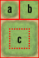
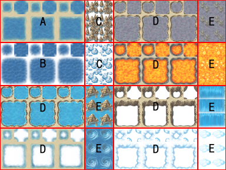
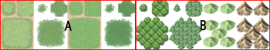
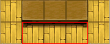
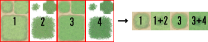
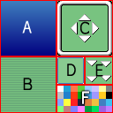

RPG Maker VX Ace allows you to use your own original files for various resources, including graphics and audio.
Selecting Manage Resources on the Tools menu displays a dialog box for importing/exporting a variety of resources. You can also directly copy resource files to the game folder, but the Manage Resources dialog box offers you commands to change transparency and other settings, so we recommend you use it while you are still getting familiar with the program.
You can use PNG and JPG files. PNG files with 32-bit color (alpha channel) are fully supported.
Files containing images of characters to display on the map screen.
A character can be of any size, and a total of twelve patterns (four directions (down, left, right, up) × 3 patterns) are arranged in the designated order. In each file, arrange characters two down and four across, for a total of eight. The size of this character is calculated based on one-twelfth the width and one-eighth the height of this file.
Note that RPG Maker VX Ace displays characters offset four pixels from tiles so as to more naturally portray them with buildings.
A file containing images of face graphics to display mainly on menus and in message windows.
One file contains up to eight 96 × 96 images arranged four across and two down.
A file containing images of enemy characters to display on the battle screen.
You can choose the size, but in general images must fit on the 544 × 296 battle screen.
A file containing images for animations to display mainly as effects on the battle screen.
Five animation cells in a row, each consisting of a 192 × 192 image, comprise one block, and each file is only as long as is required to accommodate the number of blocks used. A file can contain up to twenty blocks (100 cells), but it would be best not to make images too large, as they will slow down game performance, including load times.
A file containing the tiles that comprise maps.
See Tilesets for more information.
A file containing images to be used as backgrounds on the battle screen.
Battlebacks1 is mainly floor images, while Battlebacks2 is mainly wall images. The two can be freely combined as a battle background.
The size is fixed to 580 × 444, slightly larger than the screen.
A file containing images (parallaxes) to display at the back layer of maps.
There are no particular size restrictions. To loop a parallax, match up the top and bottom and left and right sides, just like you would for Web page wallpaper.
A file containing images to display on the title screen.
Titles1 draws the main background, while Titles2 draws borders, etc. Combine the two any way you want to make a title screen.
The size is fixed at 544 × 416.
A file containing the icons to display when running the Show Balloon Icon event command.
The size is fixed at 256 × 320. Arrange 8 patterns × 10 types of balloon icons, each of the size 32 × 32 per pattern, therein.
A file containing icon images for displaying next to skill and item names.
Arrange icons (each a 24 × 24 image) in rows of sixteen and include as many rows as necessary.
Note that the icons used for indicating parameter buff and debuff states are limited to icons numbers 64 to 95.
A file containing effect images to display at the start of battles.
Size is fixed at 544 × 416, and the file must be a 256-bit grayscale PNG file. The screen is overwritten from the lowest palette number to the highest.
A file containing the image of the shadow displayed when on an airship.
The image can be any size.
A file containing the image to display on the game over screen.
The size is fixed at 544 × 416.
A file containing the images that comprise windows.
See Window Skins for more information.
A file containing the images to display using in-game events.
The images can be any size.
Each tile is 32 × 32, and they must be grouped into five sets labeled A through E according to the rules detailed below.
Note that specifications may vary according to the database settings made in Mode for Tileset. For information on the specifications when Mode is set to VX-Compatible Type, refer to RPG Maker VX resource standards.
This set is handled as lower layer tiles during map drawing. It is further divided up into five groups, with almost all of the groups comprised of auto tiles (special tiles for which borderlines are automatically created).
As a rule, the basic structure of auto tiles follows the six patterns shown below.

Auto tile images will be determined to be forest tiles if the (4, 4) position from the lower right is transparent. If the bush attribute is assigned to a forest-type auto tile, walking graphics will not turn translucent, including the lower right corner and lower left corner boundaries, on the eight kinds of tiles described below.

The size is fixed at 512 × 384. As the figure above shows, the tiles are comprised of a combination of five block patterns. As a rule, the tiles in this group will not create a borderline, even when placed adjacent to each other.
Only tiles in this group can be passed over by boats and ships. However, if they are specifically set to be passable by walking, they will become impassible to boats and ships.
Auto tiles used for oceans. They can be animated by placing the three tiles that comprise the basic auto tile structure side by side.
Auto tiles used for deep oceans. Only tiles in this block can create borderlines for ocean tiles when they are adjacent to group 1 tiles. The transparent color portion of this block is automatically complemented by block A tiles. As with block A, they can be animated by placing the three tiles that comprise the basic auto tile structure side by side.
Note that tiles in this block are impassable by boats.
Auto tiles for embellishing block A ocean tiles. The transparent color portion of this block is automatically complemented by block A tiles.
Note that tiles in this block are impassable by boats and ships.
Auto tiles used for water. They can be animated by placing the three tiles that comprise the basic auto tile structure side by side.
Tiles used for waterfalls. Two tiles side by side form a pattern, and they can be animated by placing three vertically.
Note that tiles in this block are impassable by boats and ships.

The size is fixed at 512 × 384. As shown in the above figure, the tiles are comprised of combination of two block patterns arranged in four vertical sets. For this group only, specifications will vary according to the settings made in Mode for Tileset in the Database.

When the counter attribute is applied to this group, it can be used as an auto tile for representing tables, and when placed on a map, the eight pixels at the bottom of the pattern are offset downward.

This block is comprised of four patterns of auto tiles, and in the actual tileset, it is handled as 1 only, 1 and 2 overlapped, 3 only, or 3 and 4 overlapped.
This block can contain four patterns, and in the actual tileset, they are tiles with special specifications that enable placement overlapping block A tiles.
This block is comprised of four patterns of auto tiles, and in the actual tileset, the three patterns from the left are handled as not having borderlines the compete with each other, while the right most pattern is handled as not making a borderline with other tiles.
This block can contain four patterns, and in the actual tileset, they are tiles that enable placement overlapping block A tiles.
These auto tiles are mainly used for building facades. This group has a size of 512 × 256, and it is comprised only by group patterns of auto tiles that are eight wide and four long.
Tiles in this group automatically produce a shadow on adjacent right-side tiles when two or more are placed vertically at map drawing time. However, no shadow will be produced if the adjacent tiles are not group 2 (excluding block C) or group 5.
These auto tiles are mainly used for walls. They are also used for walls in dungeon generation. The size is fixed at 512 × 480. They are comprised by the basic auto tile structure or only group patterns of auto tiles that are eight wide and three long.
Tiles in this group automatically produce a shadow on adjacent right-side tiles when two or more are placed vertically at map drawing time. However, no shadow will be produced if the adjacent tiles are not group 2 (excluding block C) or group 5.
The size is 256 × 512 and you should place 8 × 16 of these tiles therein. The tiles in this file are all treated as ordinary tiles. The tiles on the third, fifth, and seventh rows from the top are also used for floors in dungeon generation.
These sets are handled as upper layer tiles during map drawing.
Each is sized 512 × 512 and you should place 16 × 16 of these tiles therein.

Window skins are 128 × 128 images. You should normally use a 32-bit PNG file.
Window background 1. The 64 × 64 pattern is drawn by growing or shrinking to fit the actual window. Strictly speaking, it is two pixels smaller around the window. This is done to show a natural-looking window with rounded corners.
Window background 2. The 64 × 64 pattern is drawn tile style so as to cover background 1.
Window frames and arrows. Four corners that are 16 × 16 are drawn and the remaining frame (the sides) are drawn tile style at a 16-pixel thickness to match the window. Arrows are used as marks when scrolling window content.
The command cursor used to show items that are selected in windows. The two pixels on the periphery are expanded/contracted horizontally and vertically, and the rest is expanded/contracted evenly to fit the size of the cursor.
The pause sign used to show the waiting-for-button-press state in message windows. It animates based on four 16 × 16 patterns.
Text colors that can be used by control characters of the Show Text event command. You can place four rows of eight 8 × 8 images (colors) each.
You can use fives types of files, namely OGG, WMA, MP3, WAV, and MID. (Note that the MID format is limited to BGM and ME.) In general, the use of OGG files is recommended for all resource types.
Audio resources used for background music.
Audio resources used for background sounds.
Audio resources used for music effects.
Audio resources used for sound effects.
The following table describes the features of each file format.
| OGG | These files contain Ogg Vorbis data, an audio compression format with excellent sound quality and compression. Files with playback times three seconds or longer are automatically played by streaming them. For such files, embedding the values LOOPSTART and LOOPLENGTH as comments allows the sample position corresponding to those values to be recognized as a loop. |
|---|---|
| WMA | The sound compression format used by Windows Media Player. Files are played using DirectShow. |
| MP3 | A popular audio compression format. Files are played using DirectShow. Its features are the same as the WMA format. |
| WAV | The standard sound format in Windows. In addition to ordinary uncompressed WAV files, the loading of Microsoft ADPCM files is also supported. |
| MID | MIDI files played by DirectMusic Synthesizer. In the case of BGM, when there is the number 111 control change in MIDI data, it is recognized as a mark for a repeat position after playing a song to the end. |
Movie resources are stored in the Movies folder. OGV (Ogg Theora) files are the only format you can use.
Movies are displayed over the center of the game screen. Movies larger than the screen size (544×416) will have their edges cut off to fit within the screen.